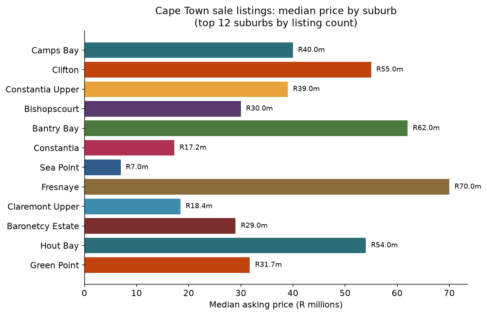
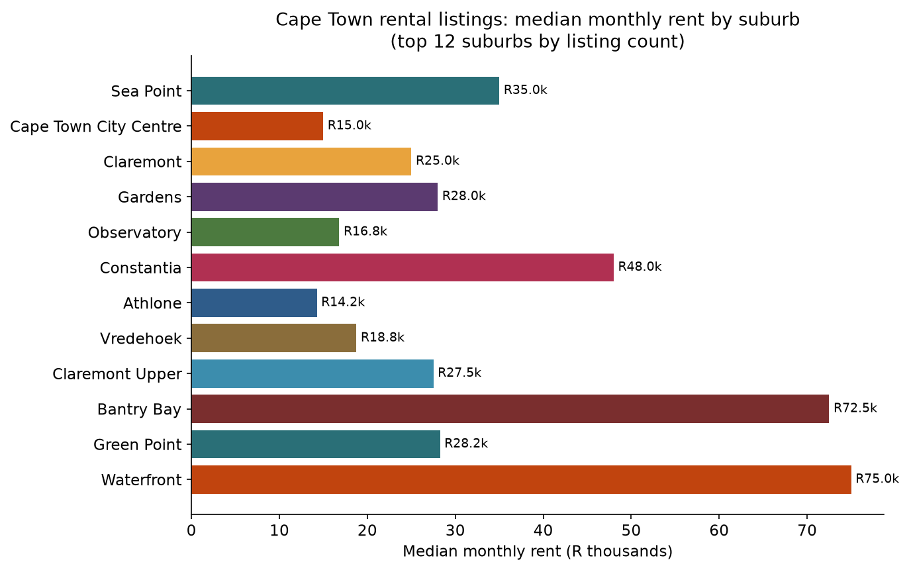
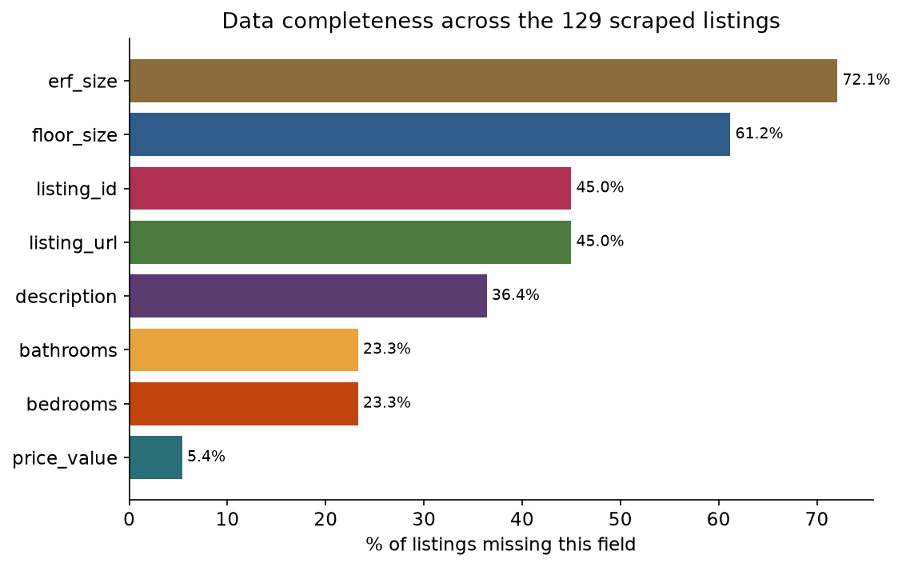

Warehouse on AWS
A star schema of listings, sources, locations, property types and markets, stored in S3 and queried through Athena with direct DDL.
Cape Town sale and rental listings from Property24, Seeff and Pam Golding, built into an AWS data warehouse and scored with machine learning.
Real data, not synthetic: 129 deduplicated listings and 1,215 image rows, collected on 6 July 2026. A small, premium-skewed single-city sample, not a market index.



A star schema of listings, sources, locations, property types and markets, stored in S3 and queried through Athena with direct DDL.
Anomaly detection for the sale and rental markets separately, a gradient-boosted sale-price model, and a similar-listings recommender. The rental sample was too small to model reliably, and the report says so.
Suburb-level affordability screening with 30% housing-burden scenarios, bond-rate sensitivity and income-tier access, alongside dated SARB and Stats SA context.
A six-page Qlik Sense application (Executive Overview, Sale Market, Rental Market, Opportunity & Data Risk, Listing Explorer, and Methodology & Trust), an Excel workbook, and a self-contained HTML data story with a matching PDF.
Tools: Python, SQL, AWS S3 and Athena, scikit-learn, Qlik Sense, Excel and HTML.
Observed listing facts, affordability scenarios and external economic context are labelled separately, so the report does not overstate what a small sample can prove. The economic indicators provide context; they are not used as property-level predictors. The AWS resources were removed once the build was complete.